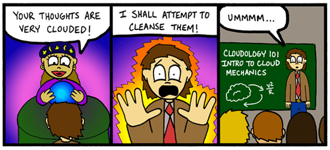

Tonight’s Punchline-up | April 11, 2008
|
Punchline
Every Friday night we do a little stand-up comedy show at ColdTowne Theater called Punchline. Tickets are just $5 at the door, and you can BYOB if you’re over 21. Come out and support local comedy – tonight’s show is hosted by our very own Bradley Jackson. Comedians performing:
- Arthur Simone
- Travis Brown
- Ryan Dilbert
- Alex Garza
- Mason Lerner
- Juan Salinas
- Chris Florence
- Seth Cockfield
- Jay Donahue
- Albert Im
- Jeremy Neal
- Lucas Molandes
10pm (arrive early) | $5 at the door
512-Go!» ColdTowne Theater | map
4803 Airport Blvd (same building as I Luv Video) • 524-2807
Bill Wine reviews ‘Smart People’
|

Smart People poster Smart People
“We’re smart people,” says a character in Smart People, “we can figure it out.”
Maybe.
But there’s no dumbing down for the audience of Smart People, a cerebral seriocomedy set in academia exhibiting behavior so dumb, it smarts. This is a movie about a dysfunctional family that wants you to think, “If these people are smart, imagine the mistakes that dumb people make.” And you do.
Dennis Quaid plays a widowed professor of Victorian literature at Pittsburgh’s Carnegie Mellon University. Still depressed by the loss of his wife a decade ago and stung by the recent industry-wide rejection of his latest scholarly book, he’s pretty much camped out at the intersection of Disinterestville and Grumpyland at this late stage of his academic career.
While recovering from a concussion, the jaded and self-absorbed prof begins a tentative romance with the emergency room doctor who tends to him, played by Sarah Jessica Parker. She’s a former student of his, it just so happens, who used to have a crush on him, but he, of course, who gave her a C, doesn’t even remember her. Anyway, before you can say “sex in the univer-city,” they’re a couple.
Austin to appropriate $48,000 to study panhandling
|
photo / Josh Swieringa 
The University of Texas and the City of Austin are teaming up to run a study of panhandling in Austin. Austin City Council voted on Thursday to give the study $48,000. The study is meant to provide hard numbers to support anecdotal information about panhandling with the goal of curbing it. The Austin City Council also voted to create a mobile home park for the homeless that would be located in East Austin.
I think there’s more effective ways to use fifty thousand dollars in the city right now. –Virginia Jensen
via KVUE.com
Pregnant men
|

Thomas Beattie is actually not the first man to get pregnant. Almost a decade ago, a San Francisco transgendered man named Matt Rice got pregnant and had a cute son. Several years after that, I met another pregnant transman in San Francisco. He was telling his story, with his wife, at a feminist open mic. So why is Beattie getting all the credit, and why now?

Columnist Annalee Newitz
Beattie is the first pregnant man most people will ever meet. He’s the guy in People magazine right now looking preggers and hunky, and the guy who was on The Oprah Winfrey Show last week. And it makes sense that he’s the first wonder of tranny obstetrics medical science to hit the spotlight. He’s a nice, small-town Oregon boy, married for five years to a nice, small-town lady, and his full beard and muscles make it quite obvious that he’s a dude. In other words: He’s not a freak from a freaky city like San Francisco. He is, as they say in the mainstream media, relatable.
And he’s playing his poster boy role perfectly. On Oprah, you could tell he was a friendly, shy person (albeit with a black belt in karate). Visibly nervous, obviously proud as hell of his wife and soon-to-be-born daughter, he didn’t try to make a political statement or lecture anybody about gender binaries being stupid. He had a hard time explaining why he had become a man, too. Often when Oprah asked pointed questions he would shrug and say, “It’s hard to explain.” Exactly like a dude to be sort of inarticulate about his own dudeness. So another part of his appeal to the mainstream media is that he fits gender stereotypes.
Plus, he’s the guy every woman wants to marry. Not only is he cute and happy to build things around the house, he’s willing to have your baby for you too. As Beattie’s wife said to Oprah with a grin, “What woman wouldn’t want her husband to get pregnant?”
The Happiest Hours: Roaring Fork
|

Roaring Fork
Drink specials aren’t a big deal – it’s all about the fancy half-price appetizers that will fill you up, like the Big Ass Burger, freshly made guacamole and warm tortilla chips, New Mexico fondue pot, green chile pork stew, and more. If you’re going out with a group of more than three or four, though, be warned that it’s sometimes pretty tough to find seating in the bar area during happy hour.
4:30pm–7pm. Must sit in the bar area to get the specials.
Roaring Fork
701 Congress Ave • 583-0000


Recent comments